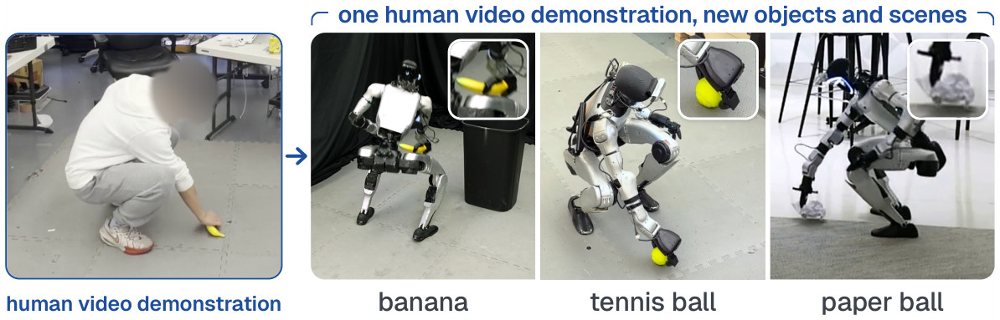
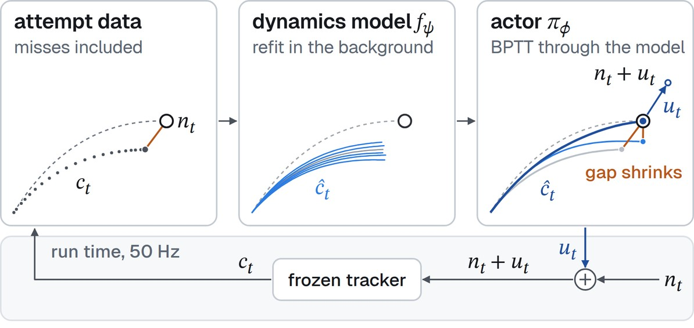

/ 01
Abstract
Scaling humanoid whole-body intelligence is often pursued through large-scale training of vision-language-action (VLA) or world action models (WAMs). Yet recent advances of pretrained vision-language agents provide reusable knowledge about objects, task goals, and physical interactions. This motivates acquiring new whole-body skills by adapting human motion references to new tasks via pretrained task reasoning and learning execution corrections online, without large-scale VLA or WAM training. Our key idea is to let a pretrained agent specify how to apply the reference, while the robot learns from its own attempts to refine grounding and correct the frozen tracker’s end-effector commands.
We present ATLAS (Agentic Test-time Learning and Adaptation System), an agentic harness for humanoid loco-manipulation from a single pair of human–object interaction video and its language instruction. The harness combines grasp affordances specified by a pretrained agent with perceived object geometry to determine grasping poses. A navigation planner positions the robot for interaction, and a frozen whole-body tracker follows the retargeted human motion with its end-effector trajectory aligned to these poses. During execution, online model-based RL learns the tracker’s command-response dynamics to modify end-effector reference, while the agent uses robot observations to refine perception prompts and success checks. These checks detect failures and trigger autonomous retries, generating new execution data and observations for further control and grounding adaptation. To the best of our knowledge, ATLAS is the first agentic whole-body intelligence system to achieve this without task-specific robot demonstrations, VLA/WAM, or task-specific simulation training.
We demonstrate ATLAS on a real humanoid performing coordinated whole-body loco-manipulation, including tasks that combine stair traversal with object manipulation, using only onboard sensing. In both simulation and real-world experiments, ATLAS enables the robot to acquire skills from a single human video demonstration with language instruction per task, improving task performance through test-time learning, and transfering these skills across objects and scenes. The same human motion is reused across objects and scenes on real hardware (Fig. 2). Against official GR00T checkpoints post-trained for loco-manipulation and static pick-and-place, ATLAS achieves 30.4% and 12.6% higher success rates, respectively, without task-specific robot demonstrations or task-specific policy pretraining. In Isaac Lab-Arena, ATLAS achieves nominal success rates of 94% and 98% on loco-manipulation and static pick-and-place, compared with 69% and 87% for the corresponding official task-specific GR00T checkpoints.

/ 02
The ATLAS Harness
ATLAS (Fig. 3) divides the work by what each layer knows and when it learns it. System 2 knows the task before any session, and System 0 knows whole-body motion. The harness, a part of each, links the two and learns what only the running robot shows. Its slow system, on the agent’s side, revises text (Sec. 2.4), and its fast system, on the tracker’s side, trains weights (Sec. 2.3). No pretrained model is fine-tuned. An attempt runs through the task’s steps (walk, pick, carry and place in Fig. 3) until the end state or a miss. A pick is a crouch, reach, hold, close and lift. Once a pick starts, the tracker (Sec. 2.2) follows the person’s motion. From the reach to the close, its end-effector command is nt + ut, the target plus the fast system’s residual. The hold is a 0.5 s pause before the close, in which the reference motion waits at its contact pose with the end effector open. After a miss, the robot retries in place with no reset (Sec. 2.5). An episode covers the attempts on one placement of the object, up to the task’s end state. A session is the lifetime of the fast system’s learner.
![Left, a person crouching to pick a banana off the floor, face blurred, titled Human video demonstration. An arrow marked 1, reference motion, leads to a plate tagged System 2, the Agent, which knows the task. Below it, a plate tagged System 0, frozen: the Whole-body tracker, which knows whole-body motion. Between the plates, an arrow down reads task spec and an arrow up reads attempts. Each plate has a blue band that continues into its part of the ATLAS harness. The top part, written by the agent (2): find, where “the trash.” is struck through and replaced by “crushed silver energy drink can.”, an amber note slow system, the agent, on saved head-camera frames, and the steps walk, pick, carry and place, with the contact marked inside pick and a loop labelled retry in place. The bottom part, on every attempt: a head-camera frame with a box on a crushed can, labelled target n sub T; (3) edit the reach, a dashed reference path and a solid edited path ending at n sub T; an arrow labelled n sub t plus u sub t runs from n sub T into the robot, which squats with its end effector open above the crushed can (a composite). An amber line runs from the head-camera frame up to the new phrase; a blue loop labelled fast system runs from the robot up into u sub t. The prompt “Pick up the trash and put it in the bin.” sits above the bottom part.](../media/blog_fig3_v4.jpg)
2.1 System 2: the task specification
We recover the person’s motion from the demonstration’s video8 and retarget it to the robot2 to obtain the reference motion. From the demonstration’s frames and measurements of the reference, the agent cuts the motion into steps. It then writes the task specification from the prompt and those measurements. Apart from its phrases, the specification uses a closed vocabulary in which each value maps to one fixed behavior. As a result, it runs unchanged in simulation and on the robot. The affordance names where on the object the end effector arrives and how it closes. The find phrases tell the segmenter (SAM 3)3 what to look for, and the done phrase describes the task’s end state as the head camera sees it. A progress indicator judges each attempt, using geometry to confirm a lift and a VLM to check the done phrase. The agent never enters the control loop.
2.2 System 0: the whole-body motion tracker
A frozen whole-body motion tracker, ScaleBFM,9 runs at 50 Hz. It was trained before any session to follow human motion and adapt to terrain. At every control step it reads a short window of motion, including each end effector’s position, and outputs joint actions. That window comes from a planner6 while the robot walks and from the retargeted reference once a pick starts, with no policy switch.
2.3 The fast system: execution dynamics by online model-based RL

At run time the segmenter finds the object in the head camera’s image, and depth places the affordance in 3-D. The target nt is where the end effector’s contact point should be at control step t. Before the hold, nt follows the person’s reach, shifted to end on the object, and then stays there. We want the contact point’s position ct to reach nt. The robot measures ct by forward kinematics. On a given robot, a general tracker commanded to nt misses it by a bias plus a deviation that changes from attempt to attempt. To counter both, the fast system’s actor reads ct at every control step from the reach to the close and adds a residual to the tracker’s end-effector command,
The residual shifts only the tracker’s end-effector input, not the reference, so nt stays the target and the body follows the person’s motion. Inside πϕ, a network outputs the change in the residual at every step. These changes sum to ut, subject to hard bounds on ut and its rate. Throughout the session, we refit a dynamics model to the attempts so far in the background (Fig. 4). The model, an ensemble of networks with randomized priors,7 predicts the end effector’s next position from its current position and the command,
We then update the actor by backpropagating through model rollouts over the reach and hold of the attempts so far.4 At every step of the hold, until the end effector closes at step T, the reward is
We also penalize changes in the residual.5 The learner needs no critic, success label or ground-truth object state.
The dynamics model reads the target and the residual only through their sum nt + ut. If the target moves by d, shifting a past attempt’s residual by −d keeps its command, so the attempt stays a valid sample for the new target. This makes goal relabeling1 exact and lets the actor follow a target that perception moves. The model and the actor start untrained in every session. The first 5 attempts are a warm-up, in which the robot explores around a zero residual.
2.4 The slow system: perception by agentic update
The slow system reuses the System 2 agent that wrote the specification, now with the robot’s view of the scene. While the robot keeps working, the agent checks two things against the saved head-camera frames and robot state. One is the set of find phrases, which name the object, the part the end effector grasps and the destination. The segmenter can miss an object in view, or its mask can land on the robot’s body or on a door’s edge instead of the handle. In either case, the agent writes new phrases from those frames (Fig. 3). A new phrase can move nT, and the fast system’s dynamics model stays valid when it does (Sec. 2.3). The other is the progress indicator, whose verdict decides whether the robot retries. At the end of the lift, its geometric rule checks that the end effector closed on something. It also checks that the head camera sees the object above its rest height or inside the end effector. Later frames can contradict that verdict, showing an empty end effector after a reported grasp or a grasped object after a reported miss. The agent then revises the done phrase or the rule’s checks.
The agent proposes a revision after a find phrase misses or a later frame contradicts a verdict, and the harness replays it against the current version on held-out saved frames and attempts. The replay costs the robot no attempt. In a paired test on those frames, a phrase is kept only if its object recall rises and its wrong-object rate does not. A revised indicator is kept only if its false successes do not rise and it disagrees less often with labels taken from later frames.
2.5 Retry in place
The progress indicator calls a miss when the end effector closes on nothing, a lift is not confirmed or the object drops. The robot then rises in place, looks again, repositions if needed and reaches again. Within an episode no one resets the scene or touches the robot.
References
- Marcin Andrychowicz et al. Hindsight experience replay. arXiv:1707.01495, 2017.
- Joao Pedro Araujo et al. Retargeting matters: General motion retargeting for humanoid motion tracking. arXiv:2510.02252, 2025.
- Nicolas Carion et al. SAM 3: Segment anything with concepts. arXiv:2511.16719, 2025.
- Marc Peter Deisenroth and Carl Edward Rasmussen. PILCO: A model-based and data-efficient approach to policy search. In ICML, 2011.
- Qiayuan Liao et al. SuperMimic: Scaling humanoid whole-body control with one differentiable world model. In CoRL, 2026.
- Zhengyi Luo et al. SONIC: Supersizing motion tracking for natural humanoid whole-body control. Science Robotics, 2026.
- Ian Osband, John Aslanides, and Albin Cassirer. Randomized prior functions for deep reinforcement learning. In NeurIPS, 2018.
- Zehong Shen et al. World-grounded human motion recovery via gravity-view coordinates. In SIGGRAPH Asia, 2024.
- Weishuai Zeng et al. Scaling behavior foundation model for humanoid robots. arXiv:2607.15163, 2026.
Cite
@misc{ren2026atlas,
title = {{ATLAS}: Agentic Harness for Whole-Body Intelligence
from Human Video},
author = {Ren, Junli and Yao, Kaixiang and Long, Junfeng and Huang, Tao and
Wang, Huayi and Chen, Yuxiao and Ding, Wenhao and Wang, Yixiao and
Wang, Yan and Luo, Wenjie and Ivanovic, Boris and Pavone, Marco and
Tomizuka, Masayoshi and Luo, Ping and Chen, Yuxin and Tian, Ran},
year = {2026},
note = {Early release},
url = {https://atlas-humanoid.github.io/}
}